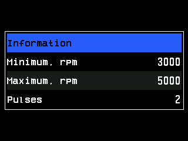

Fan sensor
The settings of a fan speed sensor of the Hectare Mini — minimum and maximum fan speed and pulses per revolution — and when the panel raises its alarms.
A fan sensor counts the revolutions of the fan of a pneumatic drill or planter. The home screen shows the fan speed in rpm. Each fan sensor has its own settings.
Open its context menu as in Sensor settings.

| Parameter | Level | What it does | Range · default |
|---|---|---|---|
| “Minimum, rpm” | Operator | Lowest permitted fan speed. Below it the panel raises “Low speed of rotation” — but only while the machine sows, or moves in the working position. | 500 … 9000 rpm, steps of 500 · 3000 |
| “Maximum, rpm” | Operator | Highest permitted fan speed. Above it the panel raises “High speed of rotation” — at any time, also standing. | 500 … 9000 rpm, steps of 500 · 5000 |
| “Pulses” | Agronomist | Pulses of the sensor per revolution of the fan. | 1 … 60 · 2 |
A fan speed that looks right but triggers alarms usually means a wrong “Pulses”: twice the pulses show half the speed.
What sowing and moving mean for the panel — When the panel controls the seeding. Without a speed sensor the minimum is watched while the panel sees seeding. With a work position sensor whose “Alarms criteria” is “Yes”, the minimum is not watched in the transport position.
The status screen
Shows the pulse frequency F= in Hz — The sensor status screen. The fan speed in rpm is this frequency × 60 ÷ “Pulses”.

The alarms of the fan and what to check: Fan or dispenser shaft: speed alarms.
Something your machine does that this page does not answer? Write to support@agriwelt.com — an engineer answers.